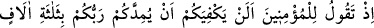
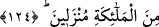

adlı biri kazdığı için bu ad verilmiştir.
Bedir savaşı, hicretin 2. senesinin 17 Ramazan’ında vukû bulmuştur.
Allah Teâlâ’nın, mü’minlerin zayıflıklarını anlatırken; cem’i kesret sîgası olan
“zelâil” kelimesini değil de, cem-i kıllet sîgası olan “ezille” kelimesini kullanması,
ashâb-ı kirâm’ın o gün zayıf olmalarının yanısıra az olduklarını da belirtmek içindir.
Zayıf oluşlarından maksat, psikolojik zaaf, silah, mal ve binek azlığı gibi o gün içinde
bulundukları durumlardır. Müslümanların zaaf halleri şöyle idi: Ashâb-ı kirâm,
Medîne’den yük develeri ile çıkmışlardı ve her deveye bir grup müslüman nöbetleşe
binmekteydiler. -Mikdâd b. Esved (r.a.)’in atından başka atları da yoktu. Mikdâd, bu
bakımdan Allah yolunda at üzerinde savaşan ilk kişidir. Ayrıca doksan develeri, altı
tane zırhları, seksen tane de kılıçları bulunuyordu.
Az oluşlarından maksat ise; yetmiş altısı muhâcir, geri kalanları ensârî olmak üzere
313 kişi olmalarıydı.
Düşmanları ise, kalabalıktılar; 1000 savaşçıdan müteşekkildiler. Yüz tane atları
vardı. Silahları boldu ve güçlü idiler.
O gün, Hz. Peygamber (s.a.)’in sancaktârı, Ali b. Ebû Tâlib (r.a.); ensârın sancaktârı
ise Sa’d b. Ubâde (r.a.) idi.
Bedir savaşında Allah’dan korktuğunuz gibi, bugün de Hz. Peygamber’in yanında
sebât etme husûsunda “Allah’dan korkun ki şükredesiniz.” Yani takvânıza karşılık
Allah’ın size lutfettiği zafere şükretmeyi ümid ederek Allah’dan korkun.
124. O zaman sen, mü’minlere şöyle diyordun: İndirilen üç bin melekle
Rabbinizin sizi takviye etmesi, sizin için yeterli değil midir?
Savaşmaktan âciz olduklarını açığa vurduklarında mü’minlere şöyle diyordun:
“Rabbinizin size” semâdan Allah’ın izniyle “indirilmiş üç bin melek ile yardım etmesi
size yetmez mi?”
“Yetmek” diye ifade edilen “kifâye”: Gedik kapama ve işi üstlenme mânasındadır.
“Yardım” diye ifadelendirdiğimiz “imdâd” da: Orduya, ordu ile yardım etmek,
demektir.
Âyet, böyle bir imdâdın yetmemesinin imkânsız olduğunu belirtmektedir.
Deniliyor ki: Allah Teâlâ, mü’minlere önce bin melek ile imdâd etmiştir. Sonra bu bin
melek, üç bine; sonra da beş bine çıkmıştır.
Allah Teâlâ’nın önce meleklerin inişinden bahsetmesinin sebebi, mü’minlerin kalbi
rahatlasın; sebât etmeye azmetsinler ve Allah’ın yardımı ile güç kazansınlar, diyedir.